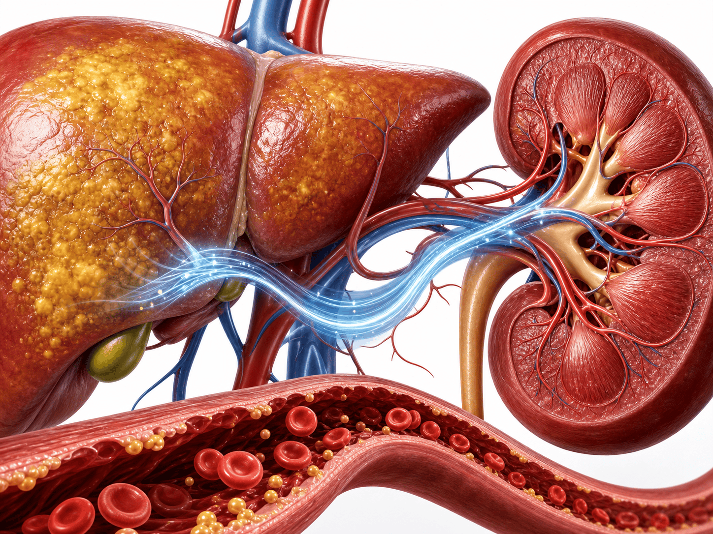
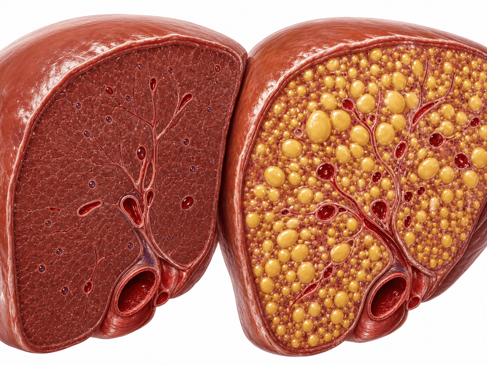
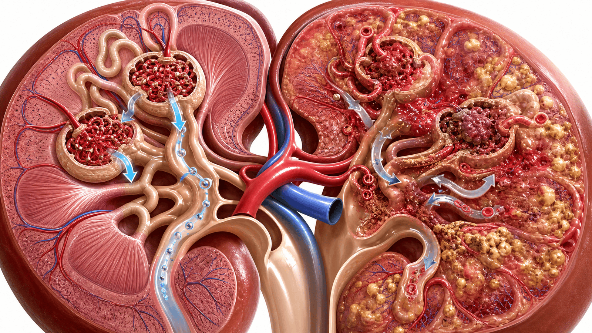

지방간(MASLD)은
간만의 문제가 아니다 — 콩팥(CKD)
대사이상 지방간질환(MASLD) 환자 7명 중 1명이 만성콩팥병(CKD) 동반 — CKD 유병률 15.22%. 동반 시 전체사망 위험 2배 이상. 36개 관찰연구·575,615명 메타분석 (Liver Int 2026, PubMed 42347761).
한 문단·세 숫자로 요약
MASLD + CKD 동반 — 흔하고(7명 중 1명)·위험하며(사망 2배)·심대사 위험인자가 배경
(95% CI 9.69–23.12)
(전체사망 /1,000 인년)
(95% CI 1.69–2.22 · 최대 위험인자)
왜 지방간에서 콩팥을 보아야 하나
MASLD = 대사이상 관련 지방간질환. 간 지방 축적을 넘어 인슐린저항성·염증을 공유하는 다장기 심대사 질환

MASLD를 다장기 질환으로 보는 이유
- 명칭 변화 — NAFLD → MASLD, 대사이상(당뇨·비만·고혈압·이상지질혈증)을 전제로 정의
- 공유 기전 — 인슐린저항성·전신 염증·심대사 손상이 간과 콩팥에 동시 작용
- CKM 흐름 — 심장(Cardio)·신장(Kidney)·대사(Metabolic)를 하나로 보는 최근 관리 패러다임
- 불확실했던 부담 — MASLD에 동반된 CKD의 유병률·발생률·예후 근거가 흩어져 있었음
- 본 메타분석 — 36개 관찰연구를 통합해 CKD 부담과 사망 위험을 정량화
Systematic Review & Meta-analysis 설계
36개 관찰연구 통합 — MASLD 성인에서 CKD 유병률·발생률·사망 위험을 random-effects로 추정
얼마나 흔한가 — 7명 중 1명
MASLD 환자에서 CKD 유병률 15.22% · 신규 발생률 22.17/1,000 인년 — 드문 합병증이 아니다

MASLD 환자 7명 중 1명이 CKD
23개 연구·575,615명
95% CI 11.44–32.89 · 13개 연구
동반되면 왜 위험한가 — 사망 2배
전체사망률 (all-cause) — MASLD + CKD 동반 vs MASLD 단독. 막대 길이는 값에 비례
MASLD 단독
MASLD + CKD
전체사망
누구에게 CKD 위험이 더 큰가
MASLD 환자 중 CKD 위험 — 당뇨·고혈압·이상지질혈증 오즈비(OR). OR 1 = 기준선, 모두 1보다 큼
왜 간과 콩팥이 함께 상하나
인슐린저항성·전신 염증·심대사 손상 — 지방간과 콩팥병이 공유하는 경로
🍬 인슐린저항성
간의 지방 축적을 만드는 인슐린저항성이 콩팥 사구체에도 압력·대사 부담으로 작용한다.
🔥 전신 염증
MASLD의 만성 저강도 염증(사이토카인)이 혈관 내피와 신장 미세혈관 손상을 촉진한다.
💓 심대사 손상
고혈압·이상지질혈증·비만이 겹치며 사구체 고압·동맥경화를 통해 신기능을 갉아먹는다.
🔗 하나의 축
간·콩팥·심혈관은 같은 대사 손상을 공유한다. 그래서 지방간이 있으면 콩팥도 위험하다.

어떻게 콩팥을 선별하나 — eGFR + uACR
지방간이 확인되면 두 가지를 함께 — 혈액의 사구체여과율(eGFR)과 소변의 알부민/크레아티닌비(uACR)
🩸 eGFR
혈청 크레아티닌 기반 추정 사구체여과율. 신장의 여과 기능을 본다. <60이 지속되면 CKD 신호.
🧪 uACR
소변 알부민/크레아티닌비. 사구체 손상(단백뇨)을 조기에 잡는다. eGFR 정상이어도 상승 가능.
🔎 둘을 함께
eGFR과 uACR은 서로 다른 손상을 잡아낸다. 둘 다 확인해야 초기 CKD를 놓치지 않는다.
📅 정기 확인
지방간 확인 시 기본 평가에 포함하고, 당뇨·고혈압·이상지질혈증 동반 시 더 자주 추적.
진료 적용 — CKM 통합관리 4단계
지방간을 확인하면 콩팥·심혈관·대사를 하나로 — CKM·KDIGO 흐름과 일치하는 접근
영상·검사로 MASLD 확인 시 간만의 문제로 끝내지 않는다. 당뇨·고혈압·이상지질혈증 동반 여부를 함께 점검.
eGFR + uACR를 기본 평가에 포함. 위험인자가 있으면 더 적극적으로·더 자주 선별한다.
혈당·혈압·지질을 목표까지 관리. 심장·신장 보호가 함께 필요하면 SGLT2 억제제 등 통합 전략을 고려.
신기능(eGFR·uACR)·대사 지표를 정기 추적. 악화 시 신장내과 협진. CKM·KDIGO 흐름과 일관되게.
진료 체크리스트 — 실천 항목
지방간 환자를 만났을 때 바로 적용할 8가지. 앞의 근거를 진료 동작으로 정리
Take-home 4가지
지방간을 확인하면 콩팥도 함께 — 진료실 바로 적용 가능 요약